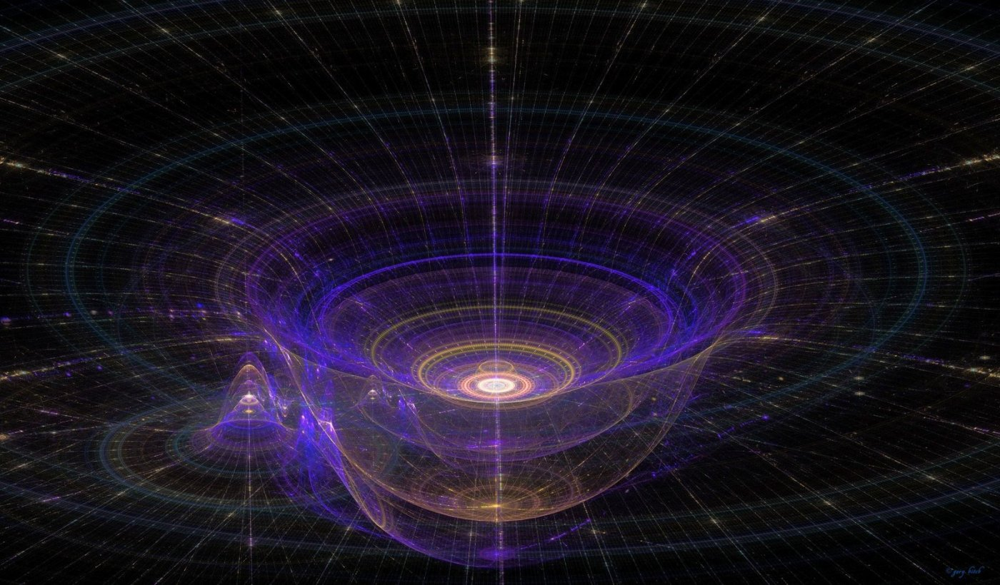
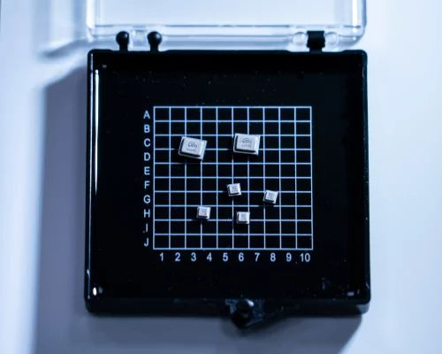

Для создания независимых и непредвзятых источников истинной случайности мы используем устройство под названием QRNG: Quantis от ID Quantique. Оно разработано для тех, кто нуждается в надежном источнике случайности.
Квантовая энтропия является источником истинной случайности, порождаемой фундаментальными свойствами квантовой механики. Она обладает несколькими преимуществами по сравнению с другими источниками истинной случайной энтропии.
Одно из основных преимуществ квантовой энтропии заключается в том, что она полностью независима от внешних воздействий. Классические источники случайности, такие как атмосферный шум или радиоактивный распад, могут быть подвержены воздействию внешних факторов, таких как температура или электромагнитные помехи. Квантовая энтропия, напротив, порождается внутренними свойствами квантовых систем, что делает их невосприимчивыми к внешним воздействиям.
Еще одним преимуществом квантовой энтропии является ее непредсказуемость. Классические источники случайности могут быть предсказаны в некоторой степени математическими алгоритмами или физическими процессами. Квантовая энтропия, однако, порождается внутренней неопределенностью квантовых систем, что делает ее по-настоящему непредсказуемой.
Дискуссии о том, случайна ли наша жизнь или детерминирована, ведутся уже много веков. Некоторые считают, что все во Вселенной, включая человеческие действия и события, предопределено и подчиняется законам природы, что делает жизнь детерминированной. С другой стороны, другие утверждают, что во Вселенной существует элемент случайности и непредсказуемости, приводящий к случайной и неопределенной жизни.
Например, в отношении простых чисел их распределение кажется случайным и не следует какой-либо очевидной закономерности. Несмотря на обширные исследования и использование сложных математических теорий, не было найдено ни одной формулы для точного предсказания следующего простого числа. Это отсутствие предсказуемости только усиливает аргумент в пользу того, что жизнь по своей сути случайна.
В конечном счете, ответ на вопрос о том, случайна ли жизнь или детерминирована, до сих пор неизвестен и, возможно, никогда не будет полностью понятен. Несмотря на это, концепция случайности и детерминизма продолжает увлекать и изучаться философами, учеными и математиками.

Чипы Quantis QRNG, основанные на технологической концепции и патенте IDQ, используют истинную квантовую случайность от шума выстрела источника света, захваченного КМОП-датчиком изображения.
В своей основе чип QRNG содержит светодиод (LED) и датчик изображения. Из-за квантового шума светодиод излучает случайное количество фотонов, которые улавливаются и подсчитываются пикселями датчика изображения, давая серию необработанных случайных чисел, к которым могут получить доступ непосредственно пользовательские приложения. Эти числа также передаются в алгоритм генератора случайных битов (RGB), который дополнительно дистиллирует энтропию квантового происхождения для получения случайных битов в соответствии со стандартом NIST 800-90A/B/C.
Quantis QRNG Chip позволяет проверять состояние в режиме реального времени: если в физическом процессе обнаруживается сбой, случайный битовый поток немедленно отключается, пользователь уведомляется, и выполняется автоматическая процедура восстановления для повторного создания данных QRNG.
Подробнее о чипеБесконечность всегда оставалась загадкой для человечества, вопросом, вызывающим бесконечные рассуждения и поиск ответов. Квантовый генератор случайных чисел, в своей сути, вносит долю бесконечности в мир человеческих забот и запросов. В бесконечных возможностях, предложенных квантовой случайностью, мы видим отражение нашей жизни - полной неожиданных поворотов и непредсказуемых событий.
Таро на квантовом генераторе случайных чисел может быть удачной идеей, поскольку она объединяет древнюю практику предсказания с современными научными достижениями. В этом соединении традиционного и современного мы можем обнаружить новые уровни понимания и интерпретации, что помогает нам лучше осознать и принять сложность и непредсказуемость нашей жизни.
Вернуться назад